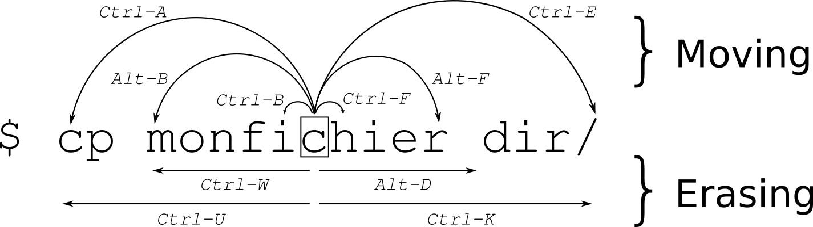

Bash & Zsh Shortcuts
Bash Shortcuts
==============
## Moving
| command | description |
|----------|--------------------------------|
| ctrl + a | Goto BEGINNING of command line |
| ctrl + e | Goto END of command line |
| ctrl + b | move back one character |
| ctrl + f | move forward one character |
| alt + f | move cursor FORWARD one word |
| alt + b | move cursor BACK one word |
| ctrl + xx | Toggle between the start of line and current cursor position |
| ctrl + ] + x | Where x is any character, moves the cursor forward to the next occurance of x |
| alt + ctrl + ] + x | Where x is any character, moves the cursor backwards to the previous occurance of x |
## Edit / Other
| command | description |
|----------|--------------------------------|
| ctrl + d | Delete the character under the cursor |
| ctrl + h | Delete the previous character before cursor |
| ctrl + u | Clear all / cut BEFORE cursor |
| ctrl + k | Clear all / cut AFTER cursor |
| ctrl + w | delete the word BEFORE the cursor |
| alt + d | delete the word FROM the cursor |
| ctrl + y | paste (if you used a previous command to delete) |
| ctrl + i | command completion like Tab
| ctrl + l | Clear the screen (same as clear command) |
| ctrl + c | kill whatever is running |
| ctrl + d | Exit shell (same as exit command when cursor line is empty) |
| ctrl + z | Place current process in background |
| ctrl + _ | Undo |
| ctrl + x ctrl + u | Undo the last changes. ctrl+ _ does the same |
| ctrl + t | Swap the last two characters before the cursor |
| esc + t | Swap last two words before the cursor |
| alt + t | swap current word with previous |
| esc + . | |
| esc + _ | |
| alt + [Backspace] | delete PREVIOUS word |
| alt + < | Move to the first line in the history |
| alt + > | Move to the end of the input history, i.e., the line currently being entered |
| alt + ? | display the file/folder names in the current path as help |
| alt + * | print all the file/folder names in the current path as parameter |
| alt + . | print the LAST ARGUMENT (ie "vim file1.txt file2.txt" will yield "file2.txt") |
| alt + c | capitalize the first character to end of word starting at cursor (whole word if cursor is at the beginning of word)|
| alt + u | make uppercase from cursor to end of word |
| alt + l | make lowercase from cursor to end of word |
| alt + n | |
| alt + p | Non-incremental reverse search of history. |
| alt + r |Undo all changes to the line|
| alt + ctl + e |Expand command line. |
| ~[TAB][TAB] | List all users |
| $[TAB][TAB] | List all system variables |
| @[TAB][TAB] | List all entries in your /etc/hosts file |
| [TAB] | Auto complete |
| cd - | change to PREVIOUS working directory |
## History
| command | description |
|----------|--------------------------------|
| ctrl + r | Search backward starting at the current line and moving 'up' through the history as necessary |
| crtl + s | Search forward starting at the current line and moving 'down' through the history as necessary |
| ctrl + p | Fetch the previous command from the history list, moving back in the list (same as up arrow) |
| ctrl + n | Fetch the next command from the history list, moving forward in the list (same as down arrow) |
| ctrl + o | Execute the command found via Ctrl+r or Ctrl+s |
| ctrl + g | Escape from history searching mode |
| !! | Run PREVIOUS command (ie `sudo !!`) |
| !vi | Run PREVIOUS command that BEGINS with vi |
| !vi:p | Print previously run command that BEGINS with vi |
| !n | Execute nth command in history |
| !$ | Last argument of last command |
| !^ | First argument of last command |
| ^abc^xyz | Replace first occurance of abc with xyz in last command and execute it |
# Kill a job
n = job number, to list jobs, run `jobs`
```bash
kill %n
```
Example:
```bash
kill %1
```
## References
1. http://cnswww.cns.cwru.edu/php/chet/readline/readline.html
2. https://github.com/fliptheweb/bash-shortcuts-cheat-sheet/blob/master/README.md